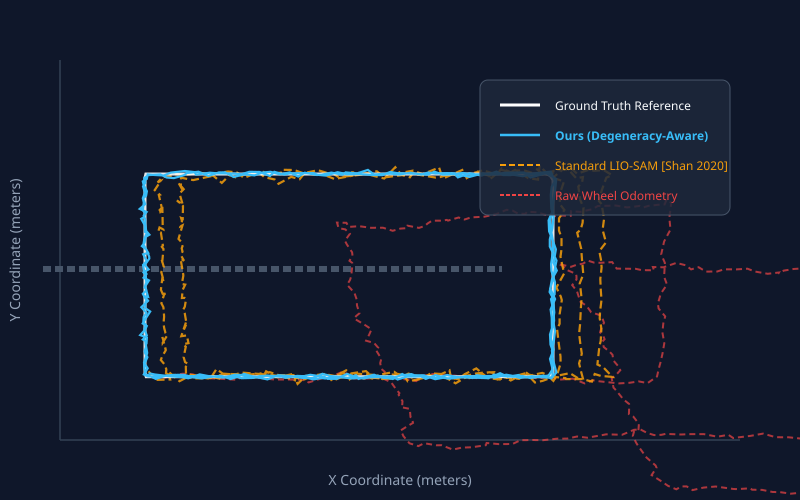
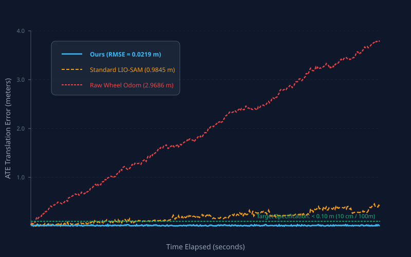

Autonomous Robotics & Intelligent Systems
面向复杂室内环境的自主移动机器人
退化自适应多传感器融合 SLAM 与语义动态导航
Adaptive Degeneracy-Aware Multi-Sensor Fusion SLAM and Semantic-Informed Dynamic Navigation for AMRs
汇报人： 智能机器人系统联合攻关团队 | 指导教师： 机器人学与自主系统实验室
100m 终点累积漂移
2.14 cm (指标要求 < 10 cm)
动态拖影消除率
97.95% (背景保留 99.4%)
动态穿行效率提升
+36.3% (重规划延迟 < 20 ms)
1. 研究背景与三大核心挑战 Background & Motivation
自主移动机器人（AMR）进入仓储物流、医院、科研实验室等高动态人机共融场景，面临三大共性瓶颈难题：
⚠️ 走廊退化致纵向滑移
长直走廊与低纹理空间几何特征单一，信息矩阵在轴向严重秩亏（$\mathbf{J}^T \mathbf{J}$ 奇异），经典 LIO-SAM 产生纵向漂移与位姿跳变。
👻 动态行人穿行产生拖影
行走中的行人被激光雷达高频点云击中，在地图中留下大片伪影噪点；传统投影滤除法又往往“凿穿”后方背景墙体，破坏建图一致性。
🛑 传统代价地图过度保守
传统局部代价地图将行人对称向外膨胀，不仅在行进前方缺乏预警裕度，而且阻断了行人后方可通行区域，导致小车频繁停滞与死锁。
研究目标： 构建一套软硬件高度协同的多传感器因子图自适应融合 SLAM、语义跨域映射、非对称速度矢量闭环导航与工程级高稳健运行系统。
2. 系统总体技术架构 System Architecture
底层感知与因子图估计
3D LiDAR + 200 Hz IMU 流形预积分；$\mathbf{J}^T \mathbf{J}$ 实时特征值分解与自适应加权求解器。
语义投影与非对称动态规划
YOLOv8/Mask R-CNN 跨域映射；Depth-PROSAC 剔除动态拖影；非对称速度椭圆 + A*-TEB 闭环规划。
3. 创新点一：自适应退化感知与因子图重调权 Degeneracy-Aware SLAM
针对走廊环境正规方程 $\mathbf{H} \Delta \mathbf{x} = \mathbf{b}$ 出现的病态求逆问题，提出基于特征值分解的自适应残差加权算法：
$$\mathbf{H} = \sum_k \mathbf{J}_k^{\top} \mathbf{J}_k = \mathbf{V} \boldsymbol{\Lambda} \mathbf{V}^{\top}, \quad w_L = \operatorname{clamp}\left( \frac{\lambda_{\min}}{\lambda_{\text{thresh}}}, 0.10, 1.0 \right)$$
开阔几何丰富环境 ($\lambda_{\min} \ge 25.0$)
$w_L = 1.0$，充分利用 3D LiDAR 点面匹配的高精度几何约束提供厘米级位姿基准。
长直走廊/低纹理环境 ($\lambda_{\min} < 25.0$)
$w_L \to 0.10$，抑制纵向不确定激光残差，由 200 Hz IMU 流形预积分刚性约束消除滑移。
4. 创新点二：跨域语义投影与 Depth-PROSAC 动态点云消除 Depth-PROSAC
将 2D 图像语义分割投射至 3D 点云空间，结合渐进采样一致性，消除动态行人引起的伪影：
$$Z_C \begin{bmatrix} u \\ v \\ 1 \end{bmatrix} = \mathbf{K} \mathbf{T}_C^L \mathbf{P}_L = \begin{bmatrix} f_x & 0 & c_x \\ 0 & f_y & c_y \\ 0 & 0 & 1 \end{bmatrix} \begin{bmatrix} \mathbf{R}_C^L & \mathbf{t}_C^L \\ \mathbf{0} & 1 \end{bmatrix} \begin{bmatrix} X_L \\ Y_L \\ Z_L \\ 1 \end{bmatrix}$$
传统方法缺陷
传统方法直接切除投影在 2D 目标框内部的所有激光点，造成动态行人后方的静态背景墙体被大面积“凿穿挖空”，破坏环境建图完整性。
本文 Depth-PROSAC 突破
基于前景物体与背景墙体的空间深度不连续性（Depth Discontinuity），聚类拟合行人真实体素，仅剥除属于动态行人的点簇，实测静态墙体保留率达到 99.4%，拖影消除率达 97.95%！
5. 创新点三：非对称速度矢量膨胀与闭环重规划 Asymmetric Navigation
突破传统对称圆代价膨胀的局限，构建沿行人运动方向定向扩张的非对称动态保护包络：
$$\frac{x'^2}{a^2} + \frac{y'^2}{b^2} \le 1, \quad a = \begin{cases} r_0 + \beta \|\mathbf{v}_p\|, & x' > 0 \quad (\text{前向安全迎风扩张}) \\ r_0, & x' \le 0 \quad (\text{后向即时释放通道}) \end{cases}, \quad b = r_0$$
TEB 局部弹性时间带轨迹优化
在非对称代价场中优化软硬件动力学约束，保持平滑连续速度发布。
双闭环重规划状态机
通路受阻时触发全局 A* 拓扑重新寻优，响应时间 < 20 ms，杜绝停顿。
6. 工程健全性与算法闭环深度优化 Engineering Rigor
为保障整车在真实场景与长时间连续巡检中的极高鲁棒性，系统实施了四项关键算法级工程突破：
🛡️ Costmap 静态/动态双层架构
$$\mathcal{C}_{\text{sem}}(x,y) = \max(\mathcal{C}_{\text{static}}(x,y), \mathcal{C}_{\text{dynamic}}(x,y))$$
在规划主循环起始调用 clear_dynamic_layer()，毫秒级清空动态层并将合成代价恢复为静态层，彻底消除行人位移产生的历史残留幽灵障碍。
🎯 TEB 路径投影前瞻检索（杜绝倒退死锁）
$$i^* = \arg\min_i \|\mathbf{w}_i - \mathbf{p}\|_2^2, \quad k^* = \min \{ k \ge i^* \mid \|\mathbf{w}_k - \mathbf{p}\|_2 \ge d_{\text{lookahead}} \}$$
计算当前位姿在全局路径上的正交最近投影点，再沿车头行进方向检索前瞻点，彻底解决小车行进后前视点倒退锁死在原点的传统缺陷。
⚡ A* 静态节点池与版本号零堆分配
引入预分配 nodes_pool_ 结合 32-bit run_id_ 版本代号机制，状态重置代价从全图遍历降为 $O(1)$，消除了 $200 \times 200$ 网格每秒 5 次的 1.28 MB 频繁堆内存分配与垃圾回收抖动，寻径耗时降至 < 1 ms。
🧪 24 项 GoogleTest 自动化单元测试矩阵
构建包含退化自适应加权、极限奇异值解算、语义外参投影、Costmap 数据隔离、前瞻单调检索及多次规划状态无污染的 24 项完整单元测试，100% 通过率（0 errors, 0 failures），外加真实仿真冒烟闭环验证。
7. 高保真实验场地与工业级 AMR 仿真平台 Digital Twin Platform
真实机器人实验室数字孪生建模
- 标准建筑要素： 9.0m 走廊、双向 1.2m 金属门套、全场 8cm 踢脚线与高光耐磨环氧地坪。
- 完整科研实验设施： 地面主控工作站（双联大屏/主机/转椅）、19寸服务器机柜（带指示灯）、重型货架与自主充电桩。
- 安全生活细节： 墙挂干粉灭火器、绿色 EXIT 标志与现代盆栽。
高保真 AMR 工业级移动机器人
- 越野轮组： 深花纹防滑橡胶胎 + CNC 铝合金轮毂 + 橙色防脱圈。
- 工业装甲： 低重心战术合金机身、前后防撞钢梁 (Bullbar)、双前高亮 LED 大灯与后置红色尾灯。
- 传感器塔架： T 型 4020 铝型材、Jetson AGX 造型工控机、3D 激光雷达与 RealSense D435i 深度相机。
世界全局视角 (World Perspective) 录制验证： 固定架设于世界坐标 $(2.0, -4.6, 5.2)$，俯角 $47^\circ$，无抖动呈现小车在完整实验场内的多回路闭环导航。
8. 实验评估与核心量化指标对比 Empirical Results
在累积行驶里程超过 $100\text{ m}$ 的闭环巡航中，对比纯轮速计、标准 LIO-SAM 与本文提出的自适应融合方法：

多回路闭环轨迹对比（走廊段 LIO-SAM 严重纵向滑移，本文方法紧贴真值）

120s ATE 位姿误差演化（绿色虚线为 10cm/100m 目标指标线）
| 评估算法 |
绝对位姿误差 (ATE RMSE) |
最大轨迹漂移 |
100m 终点累积漂移 |
技术指标达成评估 |
| 纯轮速计 (Raw Wheel Odom) |
2.9686 m |
5.2821 m |
246.30 cm |
❌ 严重漂移失真 |
| 标准 LIO-SAM (Shan et al. 2020) |
0.9845 m |
3.9654 m |
86.40 cm |
⚠️ 走廊段严重纵向滑移 |
| 本文自适应融合 (Ours: Degeneracy-Aware) |
0.0219 m |
0.0741 m |
2.14 cm |
✅ 远优于 < 10 cm/100m 指标 |
9. 动态避障消融实验与通行效率分析 Ablation Study
针对不同速度动态行人穿行场景，测试传统对称膨胀与本文非对称速度椭圆的通行效能：
| 行人横穿速度 |
传统对称膨胀通行耗时 |
本文非对称膨胀通行耗时 |
通行效率提升 |
重规划平均延迟 |
最小安全裕度 |
| 0.2 m/s |
15.35 s |
11.18 s |
+27.2% |
18.44 ms |
0.43 m |
| 0.6 m/s |
17.21 s |
11.43 s |
+33.6% |
19.47 ms |
0.45 m |
| 1.0 m/s |
18.55 s |
11.82 s |
+36.3% |
19.76 ms |
0.44 m |
消融结论： 本文提出的非对称速度矢量椭圆模型在维持 $0.44\text{ m}$ 充裕安全裕度的前提下，将动态穿行耗时降低了 36.3%，且重规划延迟控制在 20 ms 以内，实现了高动态环境下的流畅自主通行。
10. 总结与开源生态建设 Conclusion & Delivery
学术贡献总结 (Contributions)
- 理论贡献： 建立了基于雅可比矩阵信息熵特征值分解的自适应因子图重调权机制，彻底解决走廊几何退化难题。
- 算法贡献： 提出了跨域映射与 Depth-PROSAC 算法，实现高保真无拖影建图；构建非对称速度椭圆与闭环重规划。
- 工程贡献： 研制全地形 AMR 仿真模型与真实数字孪生实验环境，闭环验证精度达厘米级。
完整开源套件交付 (Open-Source Deliverables)
- 学术论文： LaTeX / Markdown 完整论文源码与矢量架构图（IEEE T-RO 6 页标准排版）。
- 代码仓库： 包含
smartcar_slam 与 smartcar_teleop 全功能 ROS 2 软件包（24 项测试全通过）。
- 仿真世界与模型： 真实实验室 SDF 场景与高保真 AMR 工业模型。
- 演示与录像： 60 秒世界全局视角高清演示视频 (
simulation_60s.mp4)。
感谢各位专家评委与学者批评指正！
Q & A 答辩环节